Tutorial 1: Getting Started¶
This first tutorial covers creating a very simple flowchart and running the calculation. The next tutorial, Tutorial 2: The Dashboard will familiarize you wth the Dashboard and looking at the result for jobs. These first couple tutorials will go through the steps carefully and in detail, because this is your first time using SEAMM. Subsequent tutorials will assume that you know how build flowcharts, run jobs and look at the output, so will not go into much detail, but will focus instead on the problem to be solved and how to set up a flowchart to address it.
Make sure that the Dashboard and JobServer are running – look at the Installing SEAMM section if you don’t remember how to get them up. In any convenient terminal window, make sure that the seamm conda environment is active and type seamm to start the SEAMM GUI:
conda activate seamm
seamm
This will bring up a window like this (the first time it may take a little while to appear. subsequently it tend to be faster):
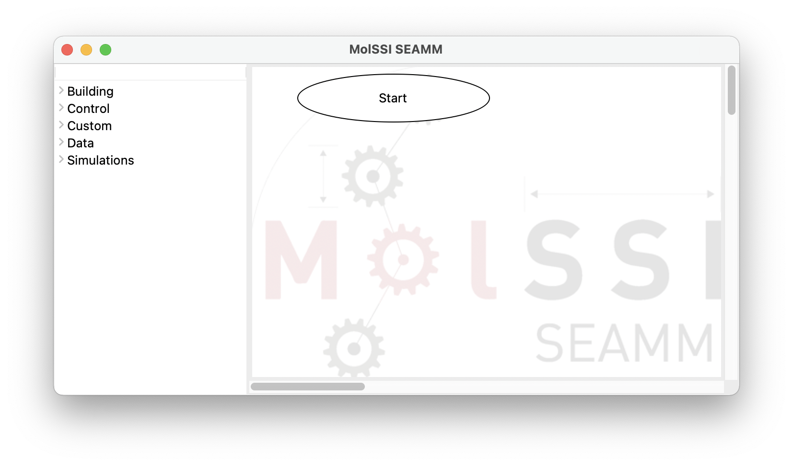
The initial, empty SEAMM window.¶
The window consists of two panes separated by a sash – the grey line. If you hover over the sash the cursor will change to a left-right arrow, indicating that you can drag the sash to adjust the sizes of the panes.
The left pane contains a list of types of plug-ins. Clicking on one of the categories expands it to show the plug-ins. Clicking again hides them:
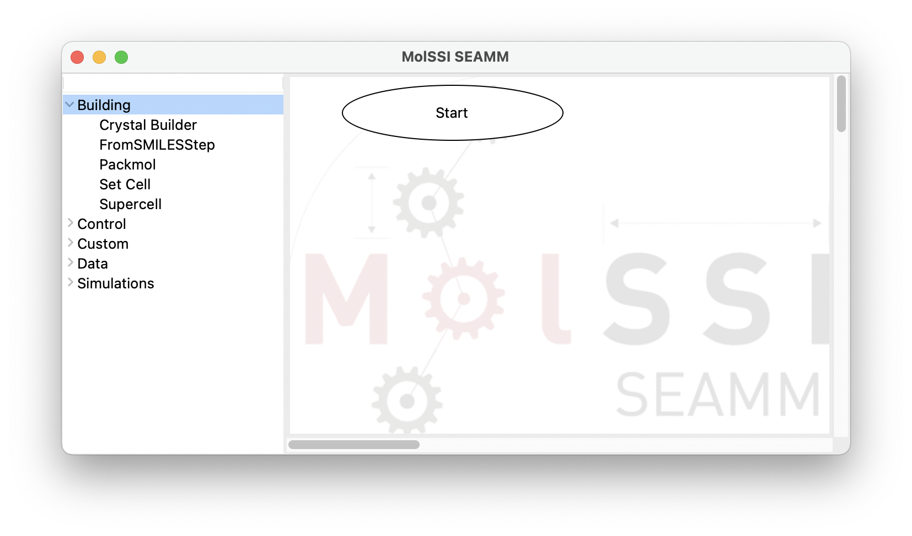
The SEAMM window with the Building category of plug-ins expanded.¶
The right-hand pane contains the initial step of a flowchart, Start. There must be one and only one start step in a flowchart because this is where execution starts. You will find that you cannot delete it or add another one.
So let’s build a very simple flowchart. We’ll create a molecule from a SMILES string – don’t worry if you don’t know about SMILES! – and then run a geometry optimization with a semiempirical quantum chemistry code. Let’s get started!
In the Building section, click on the FromSmilesStep. It will appear in the right pane, connected to the start step:
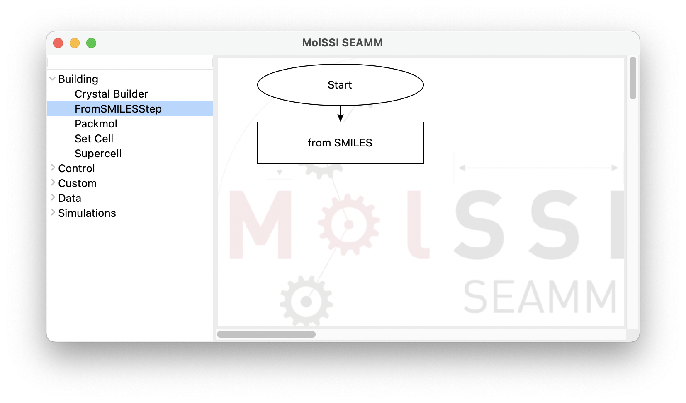
The flowchart after adding the FromSMILESStep.¶
If you accidentally click twice, or put in a step that you don’t want, just delete it. Right click on any of the steps and a menu will appear:
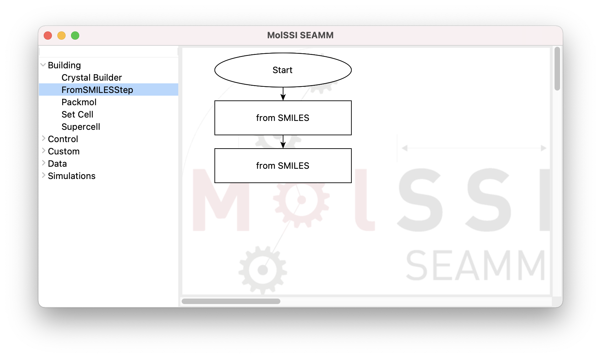
Deleting a step for a flowchart.¶
Now we need set the SMILES string for the molecule that we want to create. Almost every step has a has a dialog for setting parameters to control what the step does. To access the dialog, either right click on the step and select Edit… from the menu, or just double click on the step to open it:
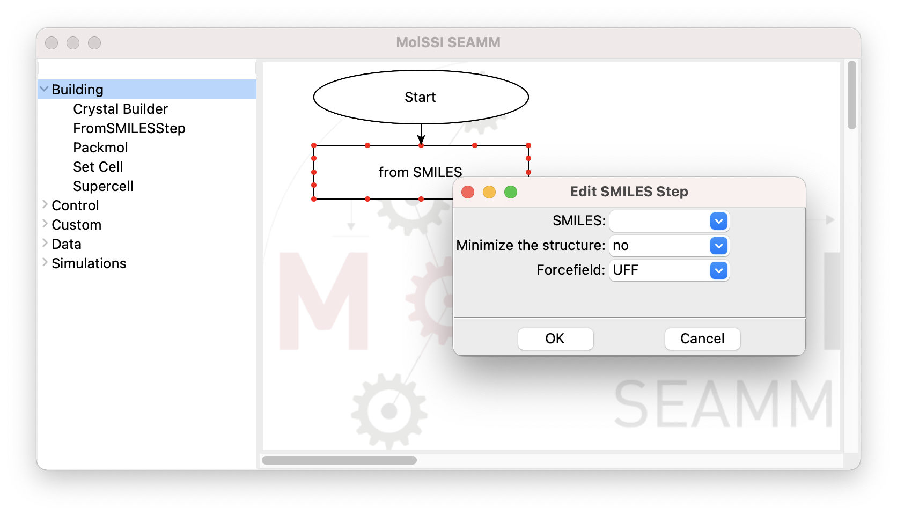
The dialog for the FromSMILES step.¶
Click in the field labeled SMILES and type CCS, which is the SMILES for ethanethiol. Leave everything else the same and close the dialog with the OK button:
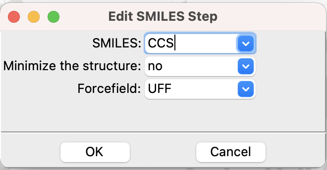
The completed dialog for the FromSMILES step.¶
Now open the Simulations section in the left panel and add a DFTB+ step:
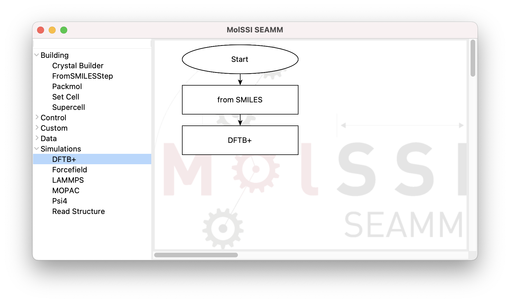
The flowchart with the DFTB+ step added.¶
And open the dialog for the DFTB+ step:
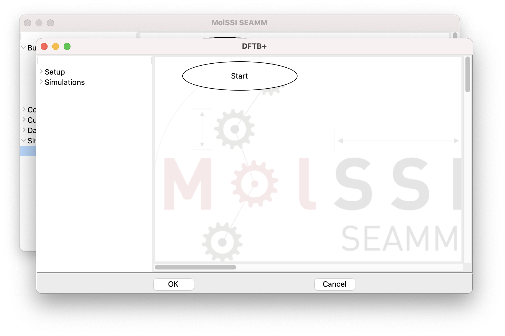
The dialog for the DFTB+ step.¶
Note that this dialog looks like the main SEAMM window. Some steps, like the FromSMILES step, do one thing, and can be handled by a single dialog. However,many of the simulation codes, such as DFTB+, do many different things and often have an internal language for control. Open the Setup and Simulation sections in the left panel and add a ChooseParameters step followed by Optimization:
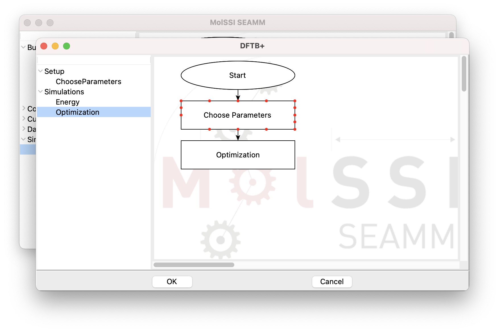
The flowchart for DFTB+.¶
Open the dialog for the ChooseParameters step by double clicking it:
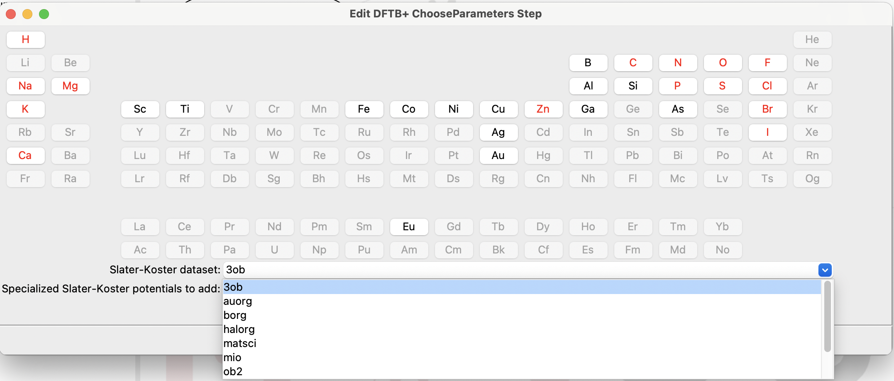
The dialog for the DFTB+ ChooseParameters step.¶
Well, that is quite a large, complex dialog – but at least it looks like a periodic table! A short description of how DFTB+ works is in order. It is a semiempirical – meaning parameterized – quantum chemistry code. It uses parameterized Slater-Koster functions for each atom, and there several parameterizations available. These datasets are listed in the pulldown near the bottom fo the dialog that is opened. Some of the datasets have add-on datasets that either add more elements or are tuned for different systems and properties. You can find more information about the parameter sets at the DFTB website.
Unfortunately, the datasets don’t cover all elements, so we need to find an appropriate dataset that can handle the elements of interest. This dialog offers two ways to do this. If you select a dataset and perhaps an auxiliary dataset in the two pulldowns at the bottom of the dialog, the elements that they can handle are highlit in red in the periodic table. The default dataset ob3 can handle H, C, N, O, F, Na, Mg, P, S, Cl, Zn, Br, I, and Ca, which certainly can handle our ethanethiol as well as a wide range of organic molecules.
Alternatively, we can select the elements that we are interested in. Suppose that we want to run a number of compounds, including ethanethiol, but also other molecules containing H, C, N, O, S, and Zn, Select those elements and see what choices are left:
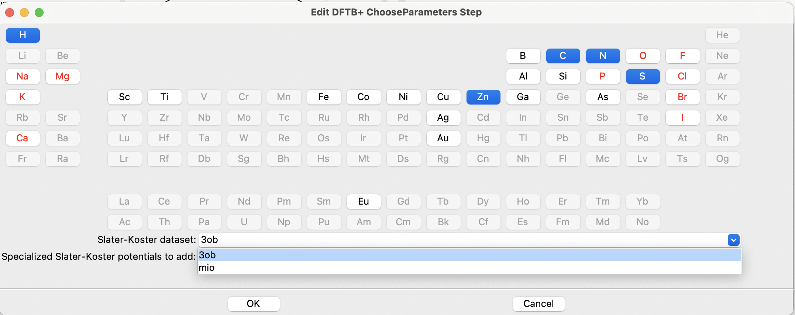
The ChooseParameters dialog with elements selected.¶
Only 3ob and mio can handle the elements that we requested! We’ll just keep the default dataset 3ob, which is the default because it is the newest and one of the more general datasets.
Almost done! Let’s take a look at the Optimization dialog:
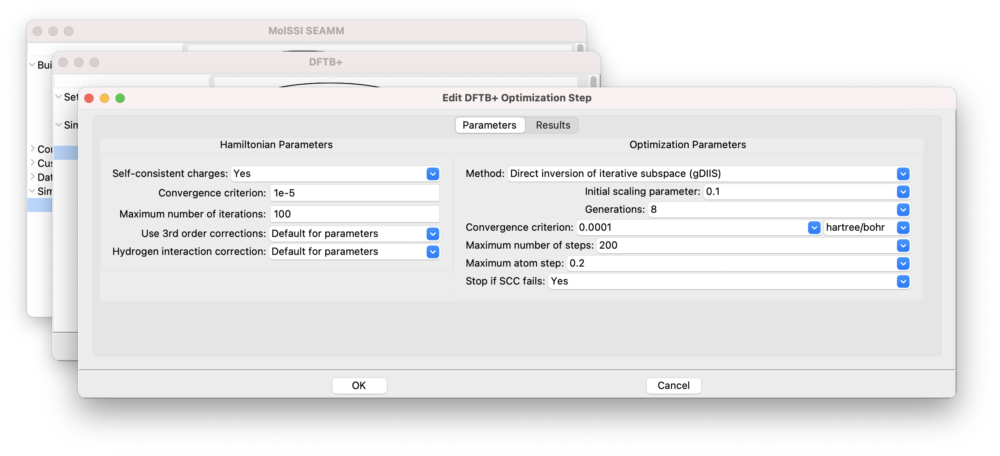
The DFTB+ Optimization dialog.¶
There are certainly a lot of choices here. On the left are controls for the Hamiltonian, i.e. the physical approximations being made. The right side consists of controls for how the geometry optimzation is carried out. The defaults are reasonable, so let’s leave the dialog alone, clicking Cancel to close the dialog without making any changes.
Tip
If you don’t intend to make changes, it is a good idea to close a dialog with the Cancel button. It is a common habit to click OK, but if you have accidentally made some changes, they will be saved when you hit OK. You might be quite puzzled when the calculations run differently, not realizing that you changed a parameter by accident. So get in the habit of clicking Cancel unless you actually meant to change something.
Click OK to close the DFTB+ dialog, saving the changes that you have made. Now you are ready to run the calculation. Click on the File menu and select Run, or use the accelerator (⌘R on a Mac, ^R on Windows or Linux) to get the following dialog:
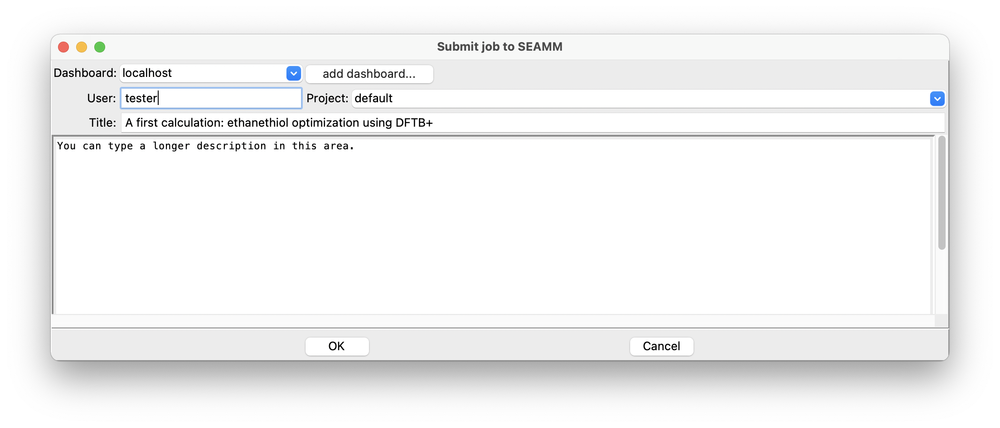
The Run dialog in SEAMM.¶
If it is not set, type “default” into the Project field, a useful title in the title field, and in the large area at the bottom of the dialog you can type a description of the calculation. Or not. Finally, click OK to run the calculation.
Tutorial 2: The Dashboard will show you how to look at the results of this job in the Dashboard.